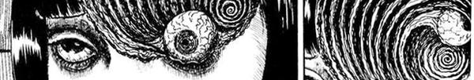

Junji Ito (伊藤 潤二), o Mestre.
31 de julho de 1963 - 59 anos
Biography
Junji-Ito, mangaká sendo considerado um dos maiores nomes do terror e horror japonês colecionando fâs pelo mundo inteiro.
Nascido em Gifu, Ito começou a desenhar por hobby antes mesmo do fundamental. A formação do seu trabalho e principais inspirações eram filmes de terror como "O Exorcista" e autores de livros como H.P Lovecraft.
Ficou principalmente famoso por seu traço extremamente dificil de reproduzir e por suas principais obras como Uzumaki, Gyo e Tomie, no Brasil ele possui uma serie chamada Junji-Ito Colletion.
